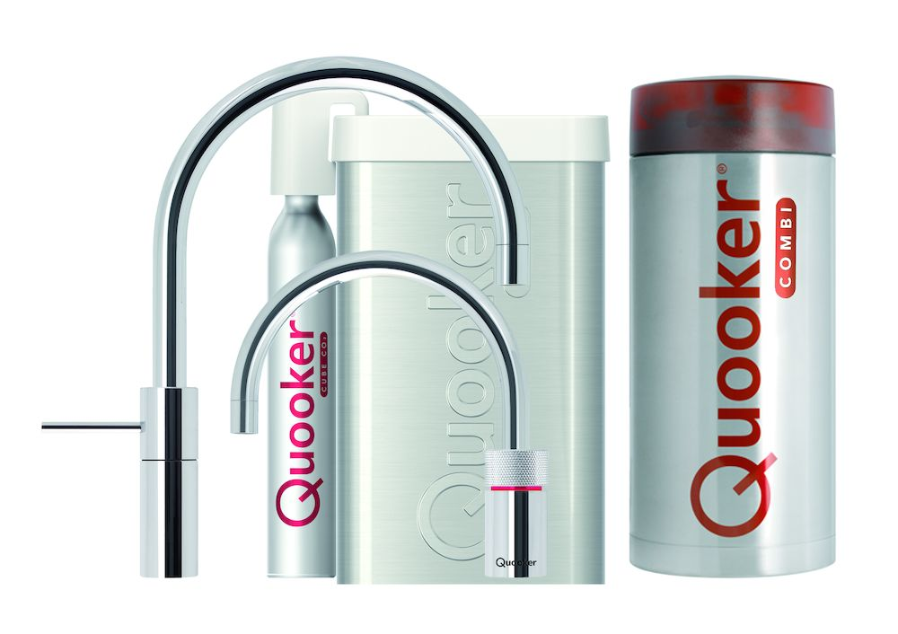

Externe activiteiten
Quooker
We hebben een excursie gehad naar Quooker. Quooker is een bedrijf dat bekend staat om innovatieve kokendwaterkranen. Het bedrijf biedt een kraan op het aanrecht en een reservoir voor kokend water onder het aanrecht.
Met de Quooker-kraan kun je direct kokend water tappen. Dit is handig voor thee, koken en andere toepassingen waarbij kokend water nodig is. Ook kun je gekoeld en bruisend water tappen met de CUBE.
Bij Quooker hebben we gesproken over wat zij doen, hoe het bedrijf is ontstaan en kregen we een rondleiding door het gebouw en de productielijn. Ze lieten zien hoe nieuwe producten ontworpen en getest worden met voorbeelden die overeenkwamen met theorie en praktijk uit ELE10.
Bij Quooker kun je werken als elektrisch ingenieur, waterbouwkundig ingenieur of automatiseringsingenieur. Ik weet nog niet zeker of ik hier stage zou willen lopen, omdat er veel bedrijven zijn waar ik mogelijk stage kan doen.
